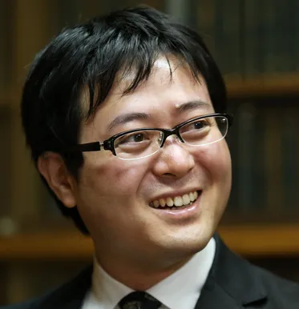

Auteur
Honobu Yonezawa est né dans la préfecture de Gifu au Japon. Il a fait ses études à l'Université de Kanazawa. C'est un écrivain dont les oeuvres sont principalement du genre mystère, school life, et vie quotidienne. On doit lui notamment les romans "Hyōka" dont l'anime a été adapté.
- Nom : Yonezawa Honobu
- Nationalité : Japonaise
- Genre : Homme
- Date de Naissance : 1978
- Statut : En activité
- Début : 2001
Synopsis
Hôtarô Oreki est un lycéen, qui agit toujours de manière assez désinvolte et réfléchie. Un jour, il pénètre dans le "Koten Bu" (Club de littérature classique) tel que recommandé par sa sœur aînée, car ce dernier n'a plus aucun membre et risque d'être dissous.
Il y rencontre Eru Chitanda, Satoshi Fukube et Mayaka Ibara. Chitanda est d'une nature très curieuse qui ne laisse jamais tomber un mystère tant qu'elle ne connait pas la fin de l'histoire. Fukube, quant à lui, a une excellente mémoire mais n'arrive pas à construire ses propres hypothèses. Ibara est assez stricte avec les autres, tout comme elle-même.
Au fil de l'histoire, le Club de littérature classique va alors résoudre plusieurs enquêtes, certaines plus conséquentes que d'autres, afin de satisfaire la curiosité de Chitanda ou encore sous la demande d'autres élèves.
Cette série montre que la vie normale peut être pleine de petits mystères, que ce soit des histoires familiales, un film d'étudiant ou même les fleurs fanées qui composent une histoire de fantôme.
Personnages Principaux
Hōtarō Oreki (折木 奉太郎)
Voix japonaise : Yuichi Nakamura
Paresseux froid et distant, il a pour devise "Je ne fais pas ce que je ne suis pas obligé de faire et ce que je dois faire, je le fais vite". Il n'aime pas se "fatiguer inutilement" afin d'économiser son énergie. Il a par contre une capacité d'analyse assez incroyable et si l'envie lui en prend, peut facilement résoudre des mystères, seulement il n'utilise pas cette capacité uniquement par paresse. Néanmoins, et à son grand désarroi, Eru Chitanda le poussera, et la plupart du temps contre son gré à se servir de cette capacité.
Eru Chitanda (千反田える)
Voix japonaise : Satomi Satō
Une jeune fille curieuse qui est un membre du club de littérature classique. Chaque fois que le mystère est porté à elle, elle ne sera pas en mesure d'arrêter de penser à ce sujet jusqu'à ce qu'il soit résolu ; sa phrase fétiche est « Watashi kininarimasu » ("Je suis curieuse").
Satoshi Fukube (福部 里志)
Voix japonaise : Daisuke Sakaguchi
Camarade de classe de Oreki, qui a rejoint le club de littérature classique en même temps que lui. Il a une mémoire impressionnante au point de se faire appeler "base de données". Il est très souriant, et optimiste. Il est jaloux d'Oreki à cause de ses capacités d'analyse exceptionnelles. Il appelle Mayaka Ibara par son prénom, ce qui montre que les deux lycéens sont assez proches. Cependant, il se montre indifférent à leur relation.
Mayaka Ibara (伊原 摩耶花)
Voix japonaise : Ai Kayano
Elle est la quatrième membre du club de littérature classique, elle l'a rejoint en dernier. Elle, Satoshi et Oreki étaient dans le même collège. Mayaka est amoureuse de Satoshi.
Opening
Source : Hyouka, Wikipédia